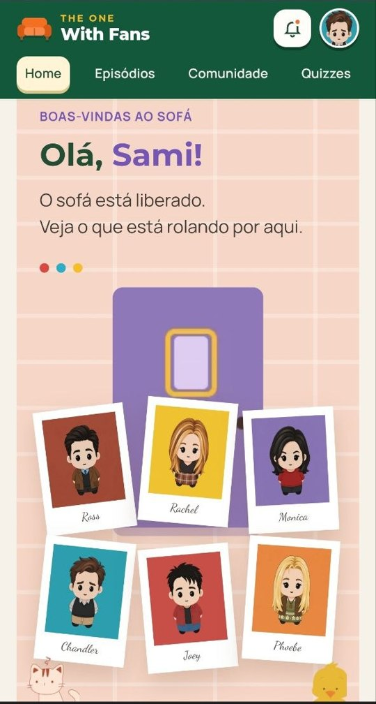
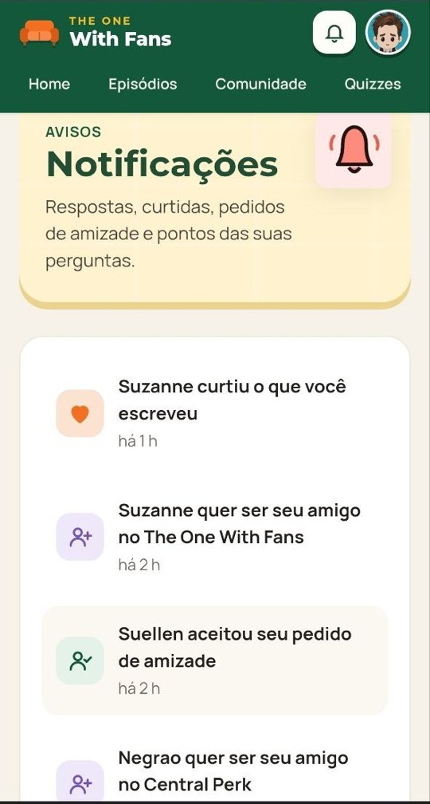
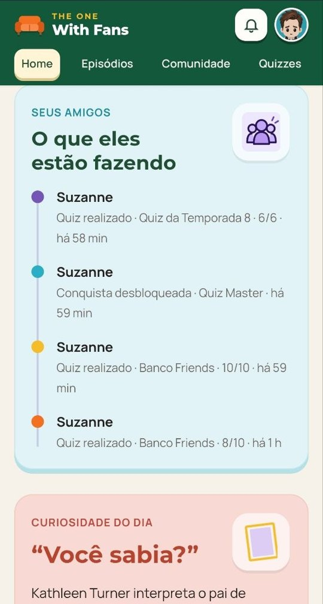
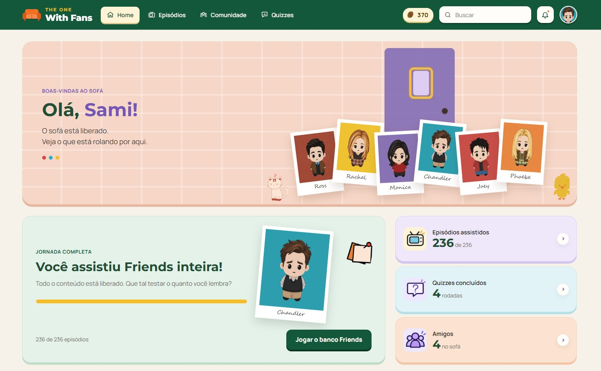
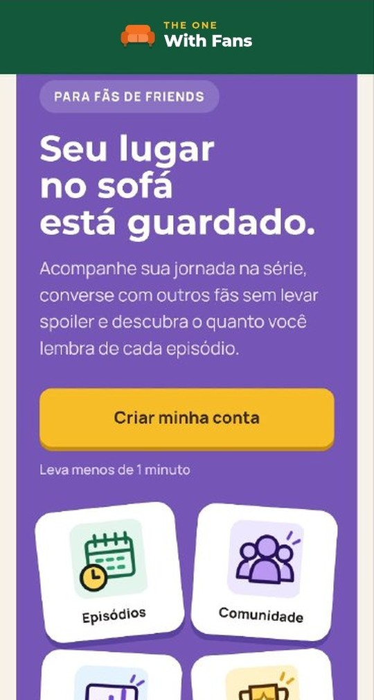
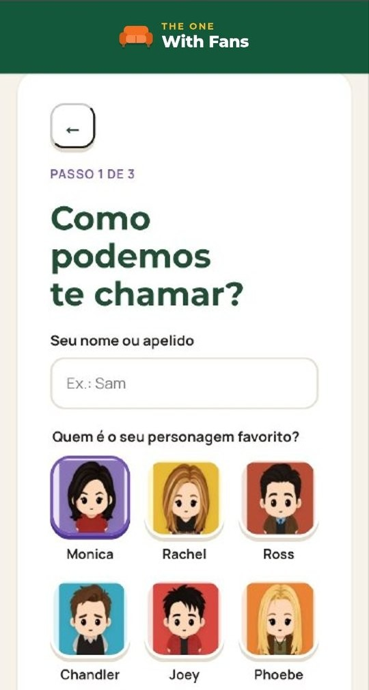
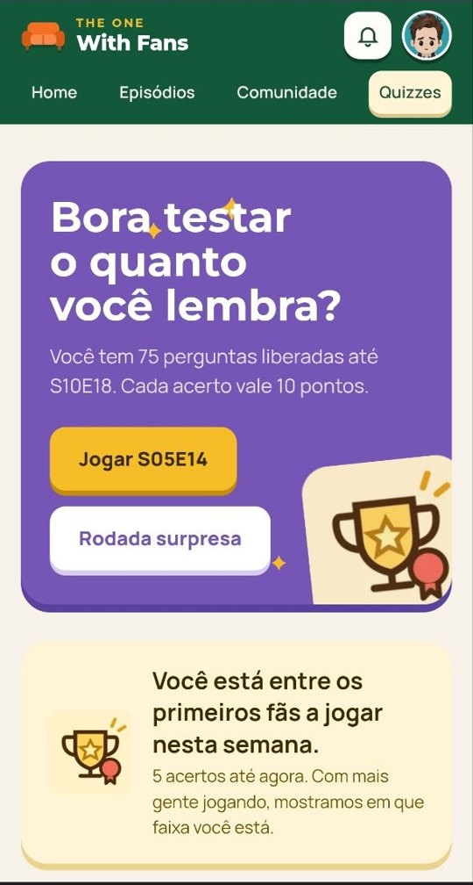
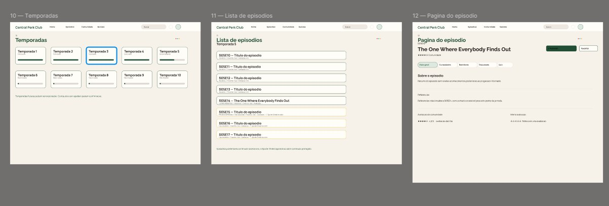
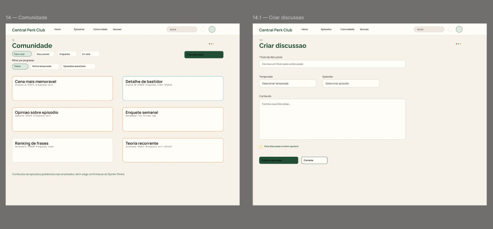

UX Research · Product Design · UX/UI · Prototipação · Design System · IA
The OneWith Fans
Uma comunidade digital onde a última temporada não é o fim da conversa.
- Período
- Ago a nov 2026 · 3 meses
- Meu papel
- UX/UI Designer, da pesquisa à direção da implementação
- Ferramentas
- Figma, Codex + MCP do Figma, GitHub, Claude Code, Supabase, Vercel




01 · O desafio
A série acabou. A conversa, não.
Friends continua na rotina de quem reassiste aos episódios e compartilha referências, e ganha fãs novos no streaming. O problema: quem assiste pela primeira vez evita conversar para não levar spoiler, e quem já terminou não tem com quem relembrar.
Mais um catálogo de episódios
Listar temporadas não resolve o que os fãs sentem falta.
O antes, o durante e o depois
As conversas, as curiosidades, os debates e a vontade de compartilhar.

02 · Pesquisa e definição do produto
Uma comunidade, não um serviço para assistir
A pesquisa exploratória levou à decisão de direção. Analisei discussões públicas e conteúdos de fãs e estruturei um questionário sobre hábitos e expectativas. Desse material saíram dois perfis comportamentais de referência.
Nostálgicos
Valorizam a memória afetiva, os personagens e os episódios marcantes.
Maratonistas digitais
Buscam interatividade, quizzes e conteúdo para compartilhar.
Do conceito ao MVP
- Jornada de episódios
- Comunidade
- Spoiler Shield
- Quizzes
- Perfil e conquistas
O conceito inicial era maior. Para validar a proposta central, priorizei cinco experiências.
03 · A experiência
Spoiler como regra do produto inteiro
Experimente · Spoiler Shield
Protegido em todas as telas
No primeiro acesso, a pessoa informa o último episódio que viu. Discussões, debates, curiosidades e perguntas de episódios posteriores ficam protegidos em todo o produto.
Onboarding em 4 passos · cada resposta personaliza algo
- Nome e personagem favoritoIdentidade no perfil
- Até onde assistiuConfigura o Spoiler Shield
- Nível de conhecimentoDefine o tamanho das rodadas de quiz
- SenhaConta criada



Cinco áreas e busca global
Home, Episódios, Comunidade, Quizzes e Perfil.
Lembra a série sem copiar
Verde escuro e creme com laranja, lilás, azul e amarelo. Montserrat e Manrope, cards com o mesmo padrão e personagens autorais em estilo chibi. A porta roxa e o sofá fazem a referência.
Percentil no lugar de pódio


04 · Da prototipação ao produto funcional
Não parei nas telas
Acompanhei a transformação das decisões de design numa aplicação real, usando IA como ferramenta de construção.
- 01
Figma + Codex (MCP)
Wireframes, jornadas e conexões entre telas, com uma biblioteca de componentes reutilizáveis.
- 02
GitHub
O código do projeto e o histórico de cada mudança.
- 03
Claude Code + Supabase + Vercel
A interface implementada, com contas, banco de dados, comunidade em tempo real e publicação na internet.
| O que eu decidi | Como a IA ajudou |
|---|---|
| Problema, escopo do MVP e prioridades | Acelerou a construção das telas e da lógica |
| Regras do Spoiler Shield e do onboarding | Implementou as regras e os testes no navegador |
| Identidade visual, padrão de cards e ajustes de alinhamento | Aplicou o padrão em todas as páginas e no celular |
| Percentil no lugar de pódio, capas dos quizzes, conteúdo do dia | Gerou variações para eu escolher e refinar |
| O que estava bom o suficiente para publicar | Revisou riscos técnicos e de segurança |
05 · Resultados e aprendizados
No ar e em uso desde o primeiro dia
O produto foi usado pelos primeiros amigos no iPhone e no Android, com interação real desde o primeiro dia.
Uma discussão recebeu respostas e curtidas de pessoas diferentes, com notificações em tempo real.
O Spoiler Shield protegeu um debate do último episódio para uma amiga que ainda não terminou a série.
Uma amiga compartilhou espontaneamente no WhatsApp a imagem do resultado do quiz.
O que levo do projeto
Priorizar é tão importante quanto criar
Um MVP enxuto deixou a proposta central clara.
Ver funcionando muda o design
Desalinhamentos e ícones que mudavam de cor no iPhone só apareceram com o site rodando em aparelhos reais.
Design inclui o que não aparece
Nome, privacidade, moderação e proteção contra spam decidem se um produto pode ser aberto ao público.
IA rende mais com direção de design
O resultado dependeu do contexto, dos padrões e das revisões que eu fazia a cada rodada.
Veja de perto
O produto está no ar
Crie uma conta, diga até onde assistiu e experimente o Spoiler Shield. A documentação completa está no Medium.